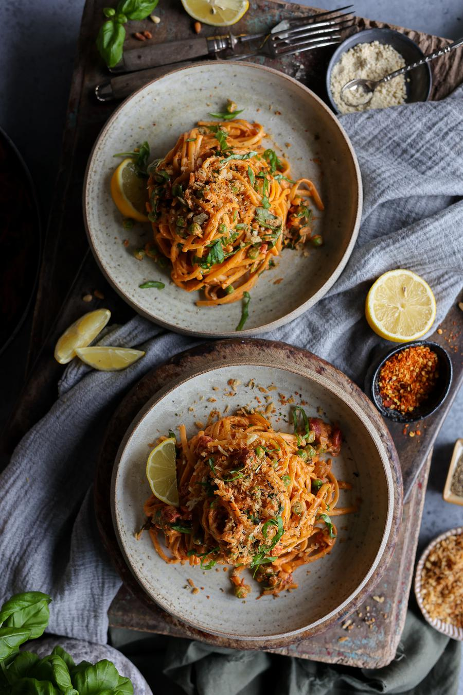
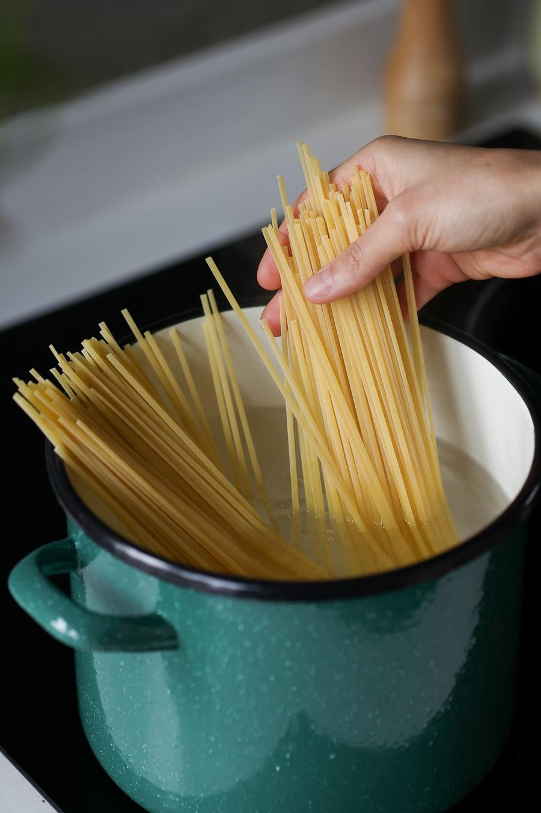
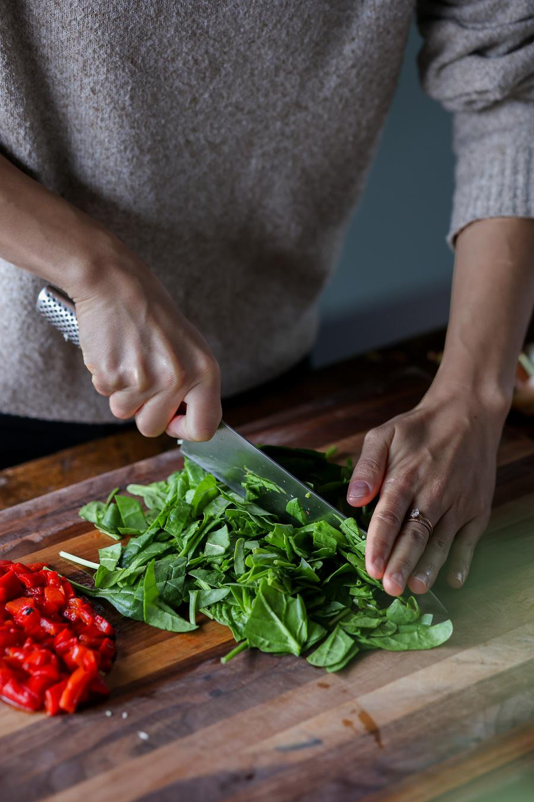
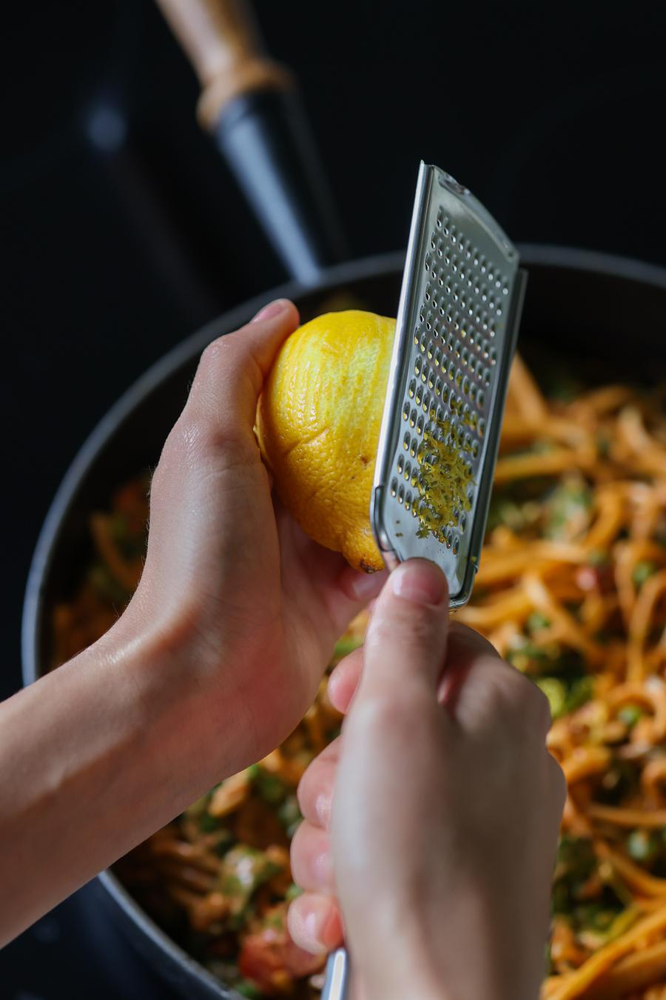
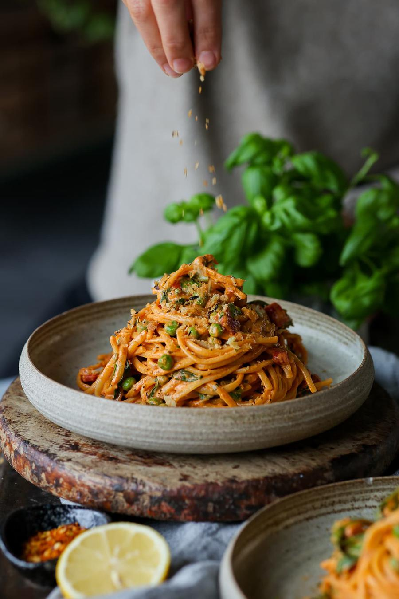

Creamy Harissa Pasta

- 🍽️Servings: 4
- 🍝Total time: 15 min
- ⏱️Prep time: 5 min
- 🧑🏼🍳Cook time: 10 min
Ingredients
- 8.8 oz (250 g) dry linguine noodles
- 2 tsp (10 mL) olive oil
- 1 medium onion, chopped
- 3 cloves garlic, minced
- 2 roasted red bell peppers from a jar, chopped
- 2 cups (60 g) fresh spinach, chopped
- 1½ Tbsp (25 g) canned tomato paste
- 1 vegetable bouillon cube, crushed
- 2 Tbsp (30 mL) harissa sauce†
- 1 Tbsp (3 g) dried oregano
- ½ tsp paprika powder
- ¼ tsp salt, plus more to taste
- 1 cup (240 mL) soy cooking cream
- 1 cup (134 g) frozen green peas
- 3 Tbsp (7 g) nutritional yeast flakes
- 3 Tbsp (25 g) toasted pine nuts
- ½ lemon, zested, juiced
Optional garnish
- fresh basil
- toasted, seasoned breadcrumbs
- vegan parmesan
Directions
- Cook the pasta according to the package instructions, draining it 1 minute before it's al dente. Just before draining, reserve ½ cup (120 mL) of the pasta cooking water.

- To a sauté pan on high heat, add the olive oil. While the oil heats up, chop the onion and add it to the pan to cook for 4 - 5 minutes. Meanwhile, continue with the next step.
- Mince the garlic, and chop the roasted red bell peppers and spinach.

- Add the garlic to the pot to cook for 2 minutes, stirring often. When lightly golden, add in the tomato paste, bouillon cube, harissa, oregano, paprika powder, and salt, and cook this for another 2 minutes.
- Add the reserved pasta cooking water to the pan, then drain the pasta.
- Add the drained pasta to the pan as well, along with all the remaining ingredients: the cooking cream, peas, nutritional yeast, pine nuts, bell pepper, and spinach.
- Once heated through, add some lemon zest (optional) and squeeze over the lemon juice. Garnish and enjoy!


Notes
- † Harissa offers a deep tangy and spicy flavour, so add less if you'd prefer less heat.